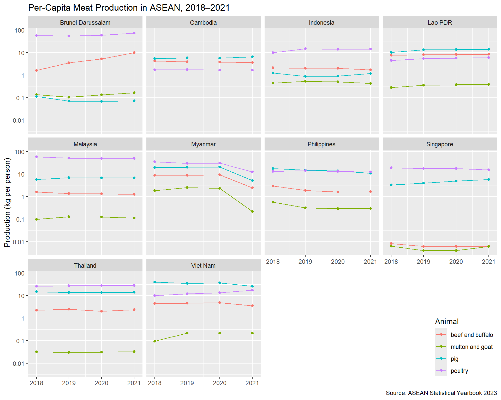

library(tidyverse)
library(readxl)
library(waldo)Week 03 Lab: Tidying ASEAN Meat-Production Data with the Tidyverse
CSC3107 Information Visualization — Team Cyan
Setup
3.1 Think Before Prompting
Each team member wrote their answers individually before any AI tool was consulted. The Reporter’s summary of the team’s combined predictions is recorded below, followed by each member’s individual notes.
Individual Predictions
Chuang Jun Hao
a. Columns: country (character), animal (character), year (integer), production (numeric/double). The production values are in thousands of metric tons so they’ll be decimal numbers.
b. 160 rows. 10 countries × 4 animal types × 4 years (2018–2021) = 160.
c. Year values appear as single row labels (2021, 2020, …) instead of being a proper column — one variable is spread across multiple rows. Each country is its own column instead of being a value in a country column. There are “Total meat production” rows that are just sums of other rows — redundant.
Lim Tze Kai
a. country (chr), animal (chr), year (numeric), production (numeric). Year could be integer but I’ll say numeric to be safe.
b. Should be 160 rows: 10 ASEAN countries × 4 meat categories × 4 years.
c. Countries are spread across columns — they should be values in one column called country. Years are row headers, not a column. There is an “ASEAN” aggregate column that is derivable and does not belong in tidy data. Section header rows like “Livestock production” are not actual observations.
Amelia Kwek Li Yan
a. country (character), animal (character), year (integer — whole numbers only), production (double). I wrote integer for year since 2018–2021 are whole numbers, but numeric would also be fine.
b. 160 rows. 10 × 4 × 4 = 160. Each unique combination of (country, animal, year) is one row.
c. The year variable is a row-group label rather than a column, so it violates “each variable forms a column”. Country names are column headers instead of values — they should all go into one country column. “Total meat production” rows are aggregates that can be computed from the other rows and should be dropped Cambodia’s mutton-and-goat values are recorded as 0 when they should be NA (not available) — zero and missing mean different things.
Tan Bing Kun Terence
a. country (chr), animal (chr), year (dbl or int), production (dbl).
b. I think 160 rows — 10 countries, 4 animal types, 4 years, so 10 × 4 × 4 = 160.
c. Years are embedded as row labels, not stored in their own column. Country names are used as column names when they should be data values. Header rows like “Livestock production” and “Poultry production” are not observations. The ASEAN total column is a derived aggregate and is not a raw observation.
Kwok Chang Feng Zenden
a. country (character), animal (character), year (numeric), production (numeric). Production is in thousands of metric tons.
b. 160 rows. Each row = one country + one animal type + one year. 10 × 4 × 4 = 160.
c. Years (2018–2021) appear only once each as a row label at the top of a block — they are not a dedicated column. Each country occupies its own column; the country name is a variable value, not a variable name. “Total meat production” and the ASEAN column summarise data that is already present and should be removed.Section sub-headers (“Livestock production”, “Poultry production”) have no production values and are structural, not data.
Discrepancies noted
- Year class: Jun Hao and Amelia wrote
integer; the others wrotenumericordouble. Both are acceptable; the reference data stores year asnumeric(double). - Cambodia missing values: Only Amelia flagged the 0 vs
NAissue at this stage; the others identified it later during the data inspection step.
Reporter’s Summary
a. Columns and their classes
| Column | Class | Example value |
|---|---|---|
country |
character | "Brunei Darussalam" |
animal |
character | "beef and buffalo" |
year |
numeric | 2021 |
production |
numeric | 4.26741 |
b. Expected number of rows
160 rows. The tidy data frame has one observation per unique (country, animal, year) combination: 10 ASEAN member countries × 4 animal types (beef and buffalo; pig; mutton and goat; poultry) × 4 years (2018–2021) = 160.
c. Why sheet X.14 is not tidy — at least three reasons
Years are row-group headers, not a column. The values 2021, 2020, 2019, and 2018 appear as single cells in the first column, heading a block of rows rather than filling a dedicated
yearcolumn. A single variable (year) therefore spans multiple structural positions instead of one column.Countries are column headers, not values. The ten ASEAN member countries (plus the ASEAN aggregate) each occupy their own column. According to Wickham (2014), each column should represent one variable; here the country names are data values masquerading as variable names.
Non-data rows are mixed in with data rows. Rows labelled “Livestock production” and “Poultry production” are structural section headers, not observations. The “Total meat production” rows contain derivable aggregates. Every row should represent exactly one observation; these rows violate that principle.
An aggregate column (ASEAN total) can be derived from the individual country columns and therefore represents redundant summary information rather than a raw observation.
Missing values are encoded as 0 for Cambodia’s mutton-and-goat entries, whereas the source PDF marks those cells as “−” (not available at the time of publication). Zero conflates a genuine zero measurement with a missing value.
3.2 Import the ASEAN Meat Production Data
The workbook has a blank row 1, so all visible row numbers in Excel are offset by one from the true cell addresses. The structure is:
- Row 2: table title
- Row 3: unit note (“in thousand metric ton” in column L)
- Row 4: column-header row (“Animal Type”, country names, “ASEAN”)
- Rows 5–36: 32 data rows (4 years × 8 rows each)
- Rows 37–39: blank / source / note
The import range is therefore "A4:L36", which takes row 4 as column names and covers all 32 data rows through the ASEAN aggregate column (L). Rows 37–39 and column M (“Back to Contents”) are excluded.
meat_raw <- read_xlsx(
"ASEAN-Statistical-Yearbook-2023.xlsx",
sheet = "X.14",
range = "A4:L36"
)
meat_raw# A tibble: 32 × 12
`Animal Type` `Brunei Darussalam` Cambodia Indonesia `Lao PDR` Malaysia
<chr> <dbl> <dbl> <dbl> <dbl> <dbl>
1 2021 NA NA NA NA NA
2 Livestock producti… NA NA NA NA NA
3 Beef and Buffalo M… 4.27 59.5 459. 61.3 40.8
4 Pig meat 0.0314 107. 324. 102. 219.
5 Mutton and Goat Me… 0.0709 0 118. 2.83 3.62
6 Poultry production 0 0 0 0 0
7 Poultry meat 31.6 27.8 3889. 43.2 1625.
8 Total meat product… 36.0 195. 4789. 209. 1889.
9 2020 0 0 0 0 0
10 Livestock producti… 0 0 0 0 0
# ℹ 22 more rows
# ℹ 6 more variables: Myanmar <dbl>, Philippines <dbl>, Singapore <dbl>,
# Thailand <dbl>, `Viet Nam` <dbl>, ASEAN <dbl>3.3 Tidy the Meat Production Data
Strategy: The first column mixes year values (2021, 2020, 2019, 2018) with animal-type labels. We (1) extract the year into a separate column using mutate() and propagate it down with fill(), (2) keep only the four rows per year block that correspond to actual animal products, (3) recode those labels to the required lower-case strings, (4) drop the ASEAN aggregate column, (5) pivot the country columns to long format, and (6) trim any stray whitespace from country names before sorting.
meat_tidy <- meat_raw |>
rename(animal = 1) |>
mutate(
year = as.numeric(str_extract(animal, "^\\d{4}$"))
) |>
fill(year) |>
filter(
str_to_lower(animal) %in% c(
"beef and buffalo meat",
"pig meat",
"mutton and goat meat",
"poultry meat"
)
) |>
mutate(
animal = case_when(
str_to_lower(animal) == "beef and buffalo meat" ~ "beef and buffalo",
str_to_lower(animal) == "pig meat" ~ "pig",
str_to_lower(animal) == "mutton and goat meat" ~ "mutton and goat",
str_to_lower(animal) == "poultry meat" ~ "poultry"
)
) |>
select(-ASEAN) |>
pivot_longer(
cols = -c(animal, year),
names_to = "country",
values_to = "production"
) |>
mutate(country = str_trim(country)) |>
select(country, animal, year, production) |>
arrange(desc(year), animal, country)
head(meat_tidy)# A tibble: 6 × 4
country animal year production
<chr> <chr> <dbl> <dbl>
1 Brunei Darussalam beef and buffalo 2021 4.27
2 Cambodia beef and buffalo 2021 59.5
3 Indonesia beef and buffalo 2021 459.
4 Lao PDR beef and buffalo 2021 61.3
5 Malaysia beef and buffalo 2021 40.8
6 Myanmar beef and buffalo 2021 137. tail(meat_tidy)# A tibble: 6 × 4
country animal year production
<chr> <chr> <dbl> <dbl>
1 Malaysia poultry 2018 1873.
2 Myanmar poultry 2018 1896.
3 Philippines poultry 2018 1380.
4 Singapore poultry 2018 107.
5 Thailand poultry 2018 1780.
6 Viet Nam poultry 2018 947.Verifier
Independent confirmation that meat_tidy has the correct row count and animal strings:
# 10 countries × 4 animals × 4 years = 160 rows
nrow(meat_tidy) == 160[1] TRUE# Exactly the four required animal strings (any order)
sort(unique(meat_tidy$animal))[1] "beef and buffalo" "mutton and goat" "pig" "poultry" 3.4 Correct Cambodia’s Mutton-and-Goat Entries
Justification: We use mutate() with if_else() and a two-condition predicate (country == "Cambodia" and animal == "mutton and goat"). This is the safest approach because it is maximally specific: it cannot accidentally overwrite any other zero in the table — for example, Singapore’s near-zero pig or beef values — and it documents the data-quality assumption explicitly in the condition.
meat_tidy <- meat_tidy |>
mutate(
production = if_else(
country == "Cambodia" & animal == "mutton and goat",
NA_real_,
production
)
)
# Confirm all four Cambodia mutton-and-goat entries are now NA
meat_tidy |>
filter(country == "Cambodia", animal == "mutton and goat")# A tibble: 4 × 4
country animal year production
<chr> <chr> <dbl> <dbl>
1 Cambodia mutton and goat 2021 NA
2 Cambodia mutton and goat 2020 NA
3 Cambodia mutton and goat 2019 NA
4 Cambodia mutton and goat 2018 NAVerifier approach — base-R indexing as an independent check:
meat_tidy_v <- meat_tidy
# Re-apply the replacement using logical subsetting rather than mutate/if_else
meat_tidy_v$production[
meat_tidy_v$country == "Cambodia" &
meat_tidy_v$animal == "mutton and goat"
] <- NA
# Both methods should produce identical production vectors
identical(meat_tidy$production, meat_tidy_v$production)[1] TRUE3.5 Checkpoint: Compare meat_tidy to Reference Data
meat_ref <- read_csv("meat_tidy_reference.csv", show_col_types = FALSE)
compare(meat_tidy, meat_ref, tolerance = 1e-6)✔ No differences3.6 Tidy the Population Data
Sheet I.1 has the same blank row 1 offset as X.14. The actual cell structure is:
- Row 5: column-header row (“Country”, “2013”, …, “2022”)
- Rows 6–15: ten country rows
- Row 16: ASEAN aggregate (excluded by stopping the range at row 15)
pop_raw <- read_xlsx(
"ASEAN-Statistical-Yearbook-2023.xlsx",
sheet = "I.1",
range = "A5:K15"
)
pop_raw# A tibble: 10 × 11
Country `2013` `2014` `2015` `2016` `2017` `2018` `2019` `2020` `2021` `2022`
<chr> <dbl> <dbl> <dbl> <dbl> <dbl> <dbl> <dbl> <dbl> <dbl> <dbl>
1 Brunei… 4.06e2 4.12e2 4.12e2 4.17e2 4.21e2 4.42e2 4.60e2 4.54e2 4.30e2 4.45e2
2 Cambod… 1.47e4 1.49e4 1.52e4 1.55e4 1.57e4 1.60e4 1.61e4 1.63e4 1.66e4 1.68e4
3 Indone… 2.49e5 2.52e5 2.56e5 2.58e5 2.61e5 2.64e5 2.67e5 2.70e5 2.72e5 2.76e5
4 Lao PDR 6.64e3 6.81e3 6.67e3 6.79e3 6.90e3 7.01e3 7.12e3 7.26e3 7.34e3 7.44e3
5 Malays… 3.02e4 3.07e4 3.12e4 3.16e4 3.20e4 3.24e4 3.25e4 3.24e4 3.26e4 3.27e4
6 Myanmar 5.12e4 5.20e4 5.25e4 5.29e4 5.34e4 5.39e4 5.43e4 5.48e4 5.53e4 5.58e4
7 Philip… 9.82e4 9.99e4 1.02e5 1.03e5 1.05e5 1.06e5 1.07e5 1.09e5 1.10e5 1.12e5
8 Singap… 5.40e3 5.47e3 5.54e3 5.61e3 5.61e3 5.64e3 5.70e3 5.69e3 5.45e3 5.64e3
9 Thaila… 6.68e4 6.70e4 6.72e4 6.75e4 6.77e4 6.78e4 6.56e4 6.54e4 6.52e4 6.61e4
10 Viet N… 9.02e4 9.12e4 9.22e4 9.33e4 9.43e4 9.54e4 9.65e4 9.76e4 9.85e4 9.95e4pop_tidy <- pop_raw |>
rename(country = 1) |>
mutate(country = str_trim(country)) |>
pivot_longer(
cols = -country,
names_to = "year",
values_to = "pop"
) |>
mutate(year = as.numeric(year)) |>
arrange(desc(year), country)
head(pop_tidy)# A tibble: 6 × 3
country year pop
<chr> <dbl> <dbl>
1 Brunei Darussalam 2022 445.
2 Cambodia 2022 16843.
3 Indonesia 2022 275720.
4 Lao PDR 2022 7443.
5 Malaysia 2022 32698.
6 Myanmar 2022 55770.Verifier: Malaysia trailing space
In sheet I.1, the cell for Malaysia contains a trailing space (“Malaysia”). After read_xlsx() the country column therefore holds "Malaysia ". The pipeline removes it with str_trim(country), so the trailing space is not present in pop_tidy$country. The check below confirms no country name ends with whitespace.
any(str_detect(pop_tidy$country, "\\s$"))[1] FALSE3.7 Checkpoint: Compare pop_tidy to Reference Data
pop_ref <- read_csv(
"population_tidy_reference.csv",
show_col_types = FALSE
)
compare(pop_tidy, pop_ref, tolerance = 1e-6)✔ No differences3.8 Join Meat Production to Population
left_join() preserves every row of meat_tidy (160 rows covering years 2018–2021) while appending the matching pop value from pop_tidy. Population rows for years 2013–2017 and 2022 have no matching meat rows and are dropped automatically.
merged <- left_join(
meat_tidy,
pop_tidy,
by = c("country", "year")
) |>
select(country, animal, year, production, pop)Verifier Task — confirm row ordering is preserved:
# The left-side columns of merged must be identical to meat_tidy
identical(
select(merged, country, animal, year, production),
meat_tidy
)[1] TRUE3.9 Derive Per-Capita Production
The unit conversion is:
\[ \text{kg per person} = \frac{\text{production}_{\text{kt}} \times 10^6\,\text{kg}}{\text{population}_{\text{thousand}} \times 10^3\,\text{people}} = \frac{\text{production}_{\text{kt}}}{\text{population}_{\text{thousand}}} \times 10^3 \]
Rows where production is NA (Cambodia mutton and goat) propagate NA to meat_per_cap, which is the desired behaviour.
merged <- merged |>
mutate(meat_per_cap = production / pop * 1e3)Verifier Task — independent check using the $ operator:
merged_v <- merged
merged_v$meat_per_cap <- merged_v$production / merged_v$pop * 1e3
all.equal(merged$meat_per_cap, merged_v$meat_per_cap)[1] TRUE3.10 Checkpoint: Compare meat_per_cap to Reference Data
merged_ref <- read_csv("merged_reference.csv", show_col_types = FALSE)
compare(merged, merged_ref, tolerance = 1e-6)✔ No differences3.11 Visualize the Result
ggplot(
merged,
aes(x = year, y = meat_per_cap, color = animal)
) +
geom_line() +
geom_point() +
labs(
x = NULL,
y = "Production (kg per person)",
color = "Animal",
title = "Per-Capita Meat Production in ASEAN, 2018–2021",
caption = "Source: ASEAN Statistical Yearbook 2023"
) +
xlim(2017.9, 2021.1) +
scale_y_log10(
breaks = c(0.01, 0.1, 1, 10, 100),
labels = c("0.01", "0.1", "1", "10", "100")
) +
facet_wrap(~country) +
theme(
legend.position = "inside",
legend.position.inside = c(1, 0),
legend.justification.inside = c(1, 0.05)
)Warning: Removed 4 rows containing missing values or values outside the scale range
(`geom_line()`).Warning: Removed 4 rows containing missing values or values outside the scale range
(`geom_point()`).
4.1 Reflect on AI Use
Tool used: Claude (Claude.ai / Claude Code).
Useful suggestion: When asked how to extract year information from the first column of meat_raw, Claude correctly suggested creating a new year column with mutate() and if_else() to detect four-digit strings, then using fill() to propagate the year values downward before filtering out the year-header rows. This ordering is essential: filtering first would permanently discard the year information before it could be copied.
Problematic response: When first asked for the read_xlsx() range, Claude suggested range = "A3:L35" for X.14 and "A4:K14" for I.1. Both were off by one row because the workbook has a hidden blank row 1 that offsets all cell addresses. The error was detected by printing names(meat_raw) and observing that column names came out as ...1, ...2, … with the 12th column showing “(in thousand metric ton)” instead of “ASEAN”. The correct ranges are "A4:L36" and "A5:K15" respectively.
4.2 Team Members’ Roles and Contributions
| Member | Role | Contributions |
|---|---|---|
| Chuang Jun Hao | Coder | Typed and maintained the canonical QMD; managed folder structure and ensured all file paths are project-relative |
| Lim Tze Kai | Navigator | Read tasks, kept the team on track, determined overall coding strategy, and checked all required questions were attempted |
| Amelia Kwek Li Yan | Verifier | Confirmed row counts, column types, missing values, and join behaviour; wrote independent verification checks |
| Tan Bing Kun Terence | AI Liaison | Queried Claude and maintained the AI interaction log; identified useful and problematic AI suggestions |
| Kwok Chang Feng Zenden | Constructive Critic + Reporter | Reviewed code and text before merging; drafted Markdown explanations; confirmed ZIP archive contents |
3.12 Comment on the Plot
The most striking pattern in the plot is the sharp decline in Myanmar’s per-capita pig production between 2020 and 2021 — a drop from approximately 20 kg per person to roughly 5 kg per person (a ~75 % fall in a single year). This is consistent with the impact of African Swine Fever (ASF), a highly contagious and lethal haemorrhagic disease that was confirmed in Myanmar in 2019 and caused severe culling and herd losses in subsequent years (FAO, 2021). Vietnam shows a similar, though more gradual, decline in pig production across the full 2018–2021 period, also partly attributable to ASF.
A second noteworthy observation is that Brunei Darussalam’s per-capita poultry production is disproportionately high (~70 kg per person in 2021) compared to every other country in the panel. This reflects Brunei’s well-developed commercial poultry sector combined with its very small population (~430 000 people), amplifying the per-capita figure.
Reference: FAO (2021) African Swine Fever — Situation update. Rome: Food and Agriculture Organization of the United Nations. Available at: https://www.fao.org/animal-disease-information/asf (Accessed: 19 May 2026).